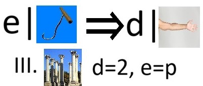
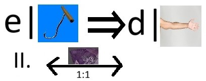
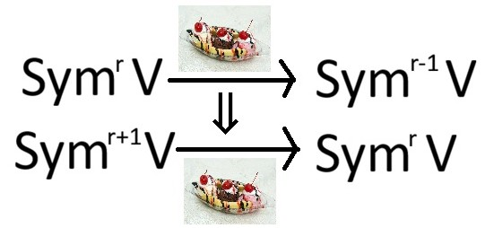
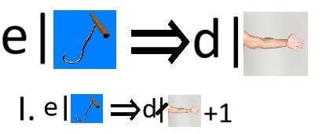
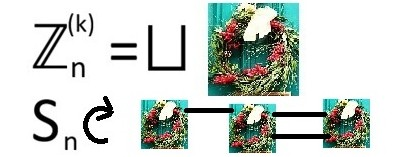
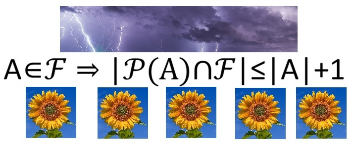
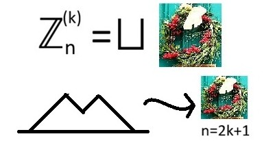
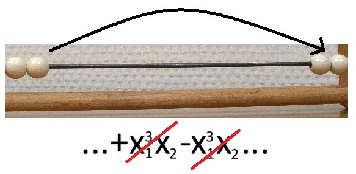
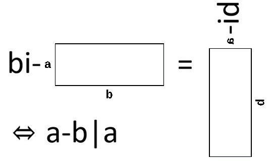
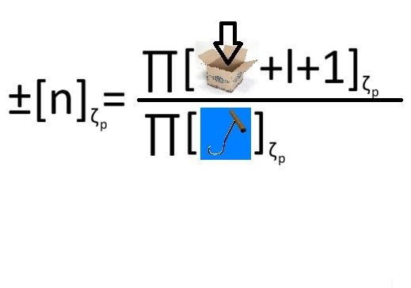

Preprints

New columns in decomposition matrices of symmetric groups for every block (with David Hemmer).
arXiv:2606.28731
Divisible Arm Lengths, Crystal Reflections, and Enumeration of Newly Found Decomposition Columns (with David Hemmer).
arXiv:2606.28305
Symmetric powers of S(n-1,1) and D(n-1,1) (with Jialin Wang).
arXiv:2507.15505
Mullineux map: d-balanced partitions and d-runner matrices.
arxiv:2504.03864
The wreath matrix (with Jan Petr).
arXiv:2501.07269
Published

Towards odd-sunflowers: temperate families and lightnings (with Jan Petr).
Combin. Theory, Series A 220 (2026)
arXiv:2406.18437
Intervals in Dyck paths and the wreath conjecture (with Jan Petr).
Electron. J. Combin. 32 (2025), no. 4, P4.44
arXiv:2501.07277
Proof of the plethystic Murnaghan-Nakayama rule using Loehr’s labelled abacus.
Ann. Comb. 29 (2025), 183–195
arXiv:2312.02958
Multiplicity-free induced characters of symmetric groups.
Trans. Amer. Math. Soc. 377 (2024), 8817–8876
arXiv:2309.07761
The representation ring of SL2(Fp) and stable modular plethysms of its natural module in characteristic p.
J. Algebra 658 (2024), 686–715
arXiv:2210.08943